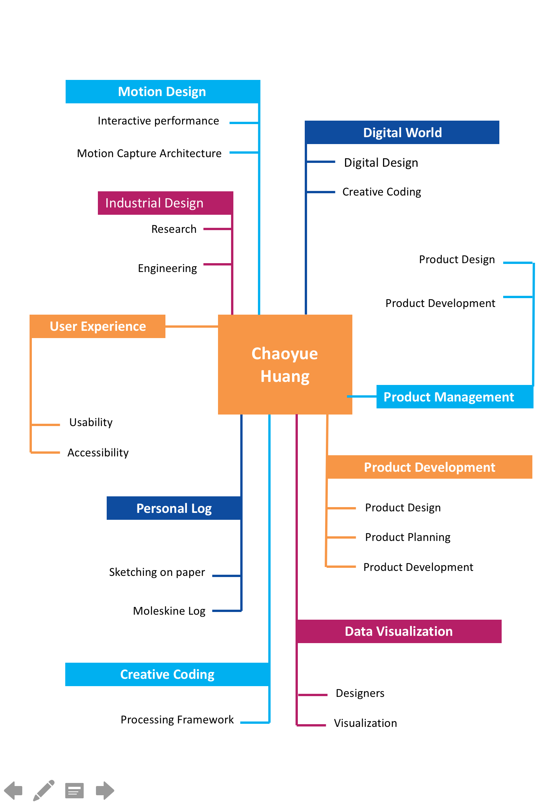
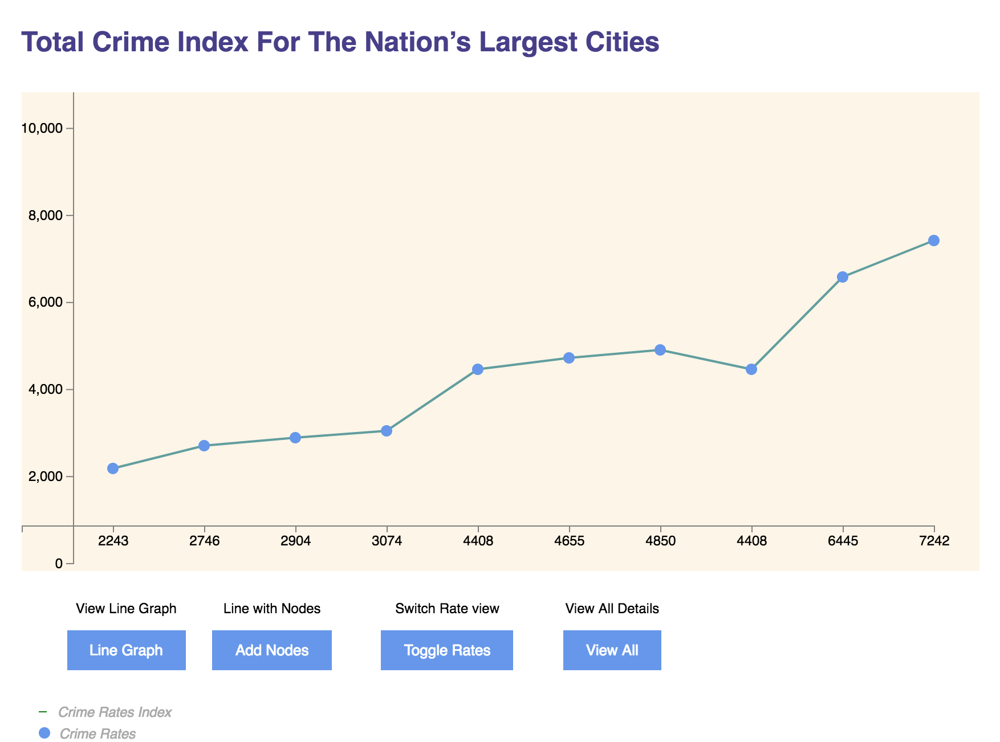
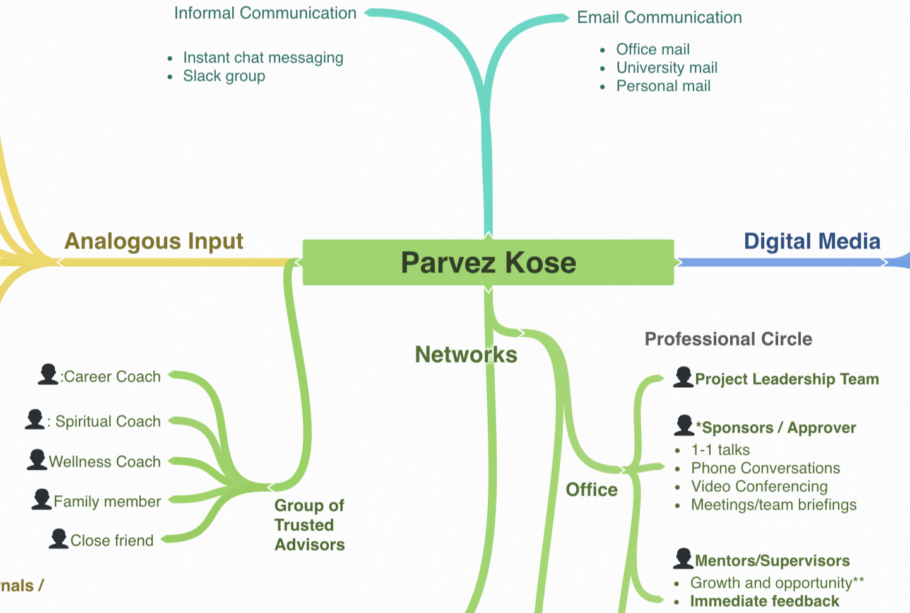
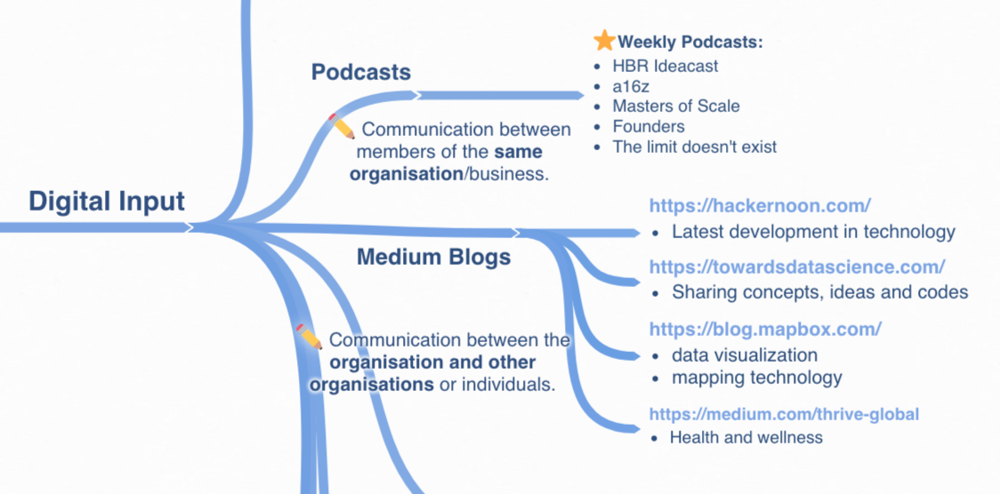
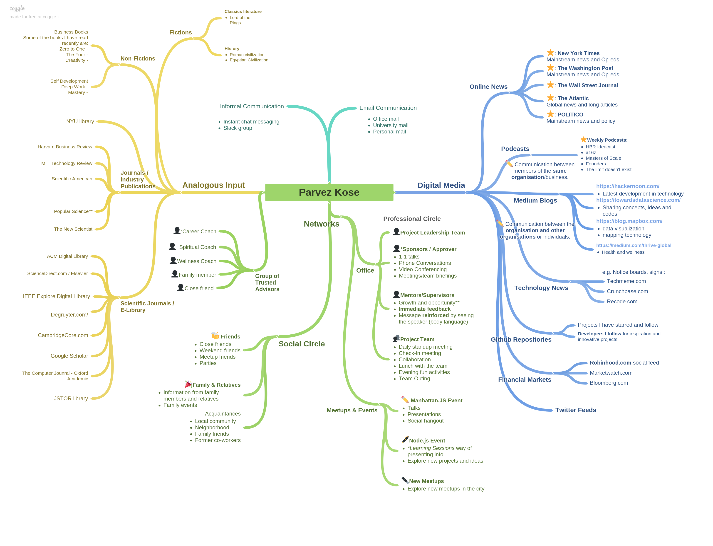

Process Website |
Ideation & Prototyping Fall 2018
10 Distinct Points - Creative Process Project 1
Christopher Nolan
-
Christopher Nolan described his filmmaking process as “some combination of intuition and geometry”
He always begins a film in an effort to find answers to interesting questions. It’s only as he gets into it that he realizes they were questions hanging over from the last film.
Christopher Nolan described his filmmaking process as “some combination of intuition and geometry”. When developing the idea for the film, he draws inspiration from architecture, mathematics and scientific methods.
He doesn't outline the story when he begins writing the script, but works more intuitively and writes it in a linear fashion. This allows him lot freedom to think deeply and sketch ideas during the writing stage.
When developing an idea, if he finds a mathematical model or a scientific model, and then draws pictures that illustrate the movement or the rhythm than he is after.
Nolan’s films are known for their unconventional structures and tight plots. Instead of outlines to keep track of the story, draw a lot of diagrams — particularly if there’s sort of a structural complexity. He will stick them all over the walls
He preserves the medium of film in the face of the rising digital tide. He believes the film has the best imaging capabilities that exist and it’s the best way of capturing an image and preserving it.
He is interested in architecture and thinks there’s a narrative component to the architecture.
He is particularly interested in the similarities or analogies between the way in which we experience a three–dimensional space that an architect has created and the way in which an audience experiences a cinematic narrative that constructs a three–dimensional -reality from a two-dimensional medium—assembled shot by shot.
He thinks of the audience at every stage of his filmmaking process. He doesn’t simply think of the audience as someone else but he tries to be among the audience himself.
He approaches the final editing process with a minimalist mindset. He thinks of editing as instinctive or impressionist, which means not to think too much, in a way, and feel it more like a natural occurrence.
Grid of 9

Classmate Discovery - Chaoyue Huang
Annotated Bibliography of 3 Creators
Geoffrey E. Hinton
Geoffrey Hinton, a leading scientist in the field of artificial neural networks research and a founder of the 'deep learning movement,’. He joined Google to lead their team researching and developing artificial intelligence technologies. Microsoft, Apple, Facebook, and many others, have been taking an intense interest lately in the kind of work that has occupied Hinton for decades.
He received his PhD in Artificial Intelligence from Edinburgh in 1978. He is currently a Professor at the Department of Computer Science at the University of Toronto where he directs the program on "Neural Computation and Adaptive Perception” for the Canadian Institute for Advanced Research.
He designs machine learning algorithms. He was one of the researchers who introduced the back-propagation algorithm that has been widely used for practical applications. His other contributions to neural network research include Boltzmann machines, distributed representations and deep belief nets etc,.
Geoffrey Hinton is a fellow of the Royal Society, the Royal Society of Canada, and the Association for the Advancement of Artificial Intelligence. He has received several awards in the industry including NSERC Herzberg Gold Medal (2010) which is Canada's top award in Science and Engineering.
Christopher Nolan
Christopher Nolan has built a reputation in the film industry as a grand showman and visual magician firmly in command of his craft.
He tells stories on a tremendously large scale and famous for assembling complex and intricately layered plots like a puzzle in his scripts.
He is best known for his record-breaking DARK KNIGHT TRILOGY. His meteoric rise to unprecedented heights of financial and cultural success has established him as one of one of those rare filmmakers who is able to harness the full power of the Hollywood studio system to his benefit.
Hans Zimmer
Hans Zimmer’s genre is mainly film score and background compositions. Zimmer's works are notable for integrating electronic music sounds with traditional orchestral arrangements.
Zimmer’s scores are modular and repetitive, packing their punch with mood and groove rather than busy, symphonic composition or lengthy themes and variations .
Though he composes music for films, The quintessential part is the music itself acts, like an actor, evolving and fitting into the Genre, Setting and Pace of the film.
Written Response to “Everything is a Remix”
Kirby Ferguson shares some interesting thoughts in Everything is a Remix,a a short documentary about creativity, copyright, and copying. This deeply influences the way we think about creativity, originality, and copyright.
Kirby explores the basic elements of creativity: copy, transform and combine. The documentary analyses the topic from a historical and social perspective. It shows how inspiration and transformation of previous creations have been the foundations of music, films, technology, art or even life.
Some of the interesting highlight from the documentry are that everything we make is a remix of existing creations and every creation requires influence. We need copying to build the foundation of knowledge and understanding. We can’t introduce something new until we are fluid in the language of our domain. After that, things can get interesting.
The most dramatic results happen when different ideas are combined. The new ideas evolve from the old ones. There are no original ideas. There are tipping points in a continuous line of innovation by many different people.
It's interesting to note that when we copy, we justify it. When others copy, we vilify it. Most of us have no problem with copying, as long as we’re the ones doing it.
Furthermore, we all are building with the same materials. The new ideas evolve from the old ones. There are no original ideas. There are tipping points in a continuous line of innovation by many different people.
In summary, the author argues that we all accept this fact and free our egos of the responsibility of being original. Which requires to change our view of concepts as creativity, copying or originality.
Constant Output 1: Data Visualization 1
Project Link: Total Crime Index For The Nation’s Largest Cities
This week I worked on developing visualization to project list of largest cities in the United States by crime rate based on 2009 statistics. I’ used the data set available from NYC OpenData and provided by the Office of the Mayor (OTM).
I sorted the initial dataset by crime rare volume and filtered out non essential attributes in order to sanitize and keep the required fields. The main attributes are list of cities, crime rates and crime index ranking.
I also experimented with the style and presentation for the visualization format. I have also used GIS data for neighborhood labels and information as depicted in the New York city map.
Article Response
Week 2 article
Steal Like An Artist
are shaped and fashioned by what we love – Goethewith well-formed advice that applies to nearly any kind of work. Steal Like an Artist gave me the push I needed to get into a more creative mindset. Although the book, and its message, may seem simple, it is clear that Austin Kleon has dedicated his life to creativity and using that to produce creative work (poetry, writing, drawing). If you feel short of creativity, then this book is for you.
One of the quote that inspired me the most is by German writer Goethe, who said, “We are shaped and fashioned by what we love”. It is true that you are in fact, a mashup of what you choose to let into your life. You are the sum of your influences.
The idea that If we're free from the burden of trying to be completely original, we can stop trying to make something out of nothing, and we can embrace influence instead of running away from it. That burden has been with me for a long time, and now Austin Kleon has given me permission to be inspired and taking from others in order to create something unique. "Imitation is about copying. Emulation is when imitation goes one step further, break through into your own thinking". This is the perfect book for breaking into your own thinking.
The second statement that resonated with me is by Jay-Z who said “We were kids without fathers… so we found our fathers on wax and on the streets and in history. We go to pick and choose the ancestors who would inspire the world we were going to make for ourselves”.
The author remarks steal from anywhere that resonates with inspiration or fuels your imagination. Select only things to steal from that speak directly to your soul. If you do this, your work will be authentic.
Response to Classmates’ Inventory Videos
DIEGO
DIEGO
Diego talks about the everyday objects he uses on a daily basis namely, Mitsubishi pen, Cardigan sweatshirt and Moeleskine notebook. He articulates how useful they are for his productivity and supplements his lifestyle, especially Moleskine notebook to jot down notes and scribble project ideas. If you’re going to consistently come up with ideas to write about or do something with, you have to be able to capture them regardless of when they show up. So it's definetly an important tool for collecting ideas and keep log of action items in our lives
Yueting Ni
Yueting presents her personal photo printer. She explains its significance in her life and how it helps record interesting thing. Its nice and handy which easy to carry anywhere. She also used it to print photos of her family members who live far away in her hometown. Yueting loves fashion and has a large collection of fashion magazines. They serve as great source of inspiration for her work to draw different ideas and interesting designss. They also represent her own sense of fashion.
Giuseppe
Giuseppe brings together his personal inventory in a novel and truly surprising way. He instills a sense of curiosity and mystery to the object in the video. This is a nice method to intrigue the user and draw their attention to the object in question. It’s also a great way to engage viewers, make them aware of the object and motivate them to learn more about it.
Notable People for Project 1
Geoffrey E. Hinton
Meet the Godfather of AI
Geoffrey Hinton is a fellow of the Royal Society, the Royal Society of Canada, and the Association for the Advancement of Artificial Intelligence. He is an honorary foreign member of the American Academy of Arts and Sciences and the National Academy of Engineering.
Geoffrey Hinton is known as the godfather of the artificial intelligence and well known for his work on neural networks or "neural nets,". Artificial neural networks mimic the behavior of neurons to enable computers to operate more like the human brain. His research group in Toronto made major breakthroughs in deep learning that have revolutionized speech recognition and object classification. It involves setting up computer systems to mimic the human brain, allowing them to learn.
I am interestesd to learn about his research on aritificial neural networks and his successfull attempt to get computers to learn like people do.
Christopher Nolan

Christopher Nolan is a film director and screenwriter. He is a talented film maker and aclaimed for his noirish visual aesthetic and unconventional storytelling. His body of work include movies like Dunkirk, Interstellar, Inception and Memento.
I am interested to explore his style of storytelling, narrative and the visual aesthetics he incorporates in his movies. It will be interesting to know what influenced his visual style as the director as he favours deep, evocative shadows, documentary-style lighting, natural settings, and real filming locations over studio world.
Hans Zimmer

Hans Zimmer is a German film score composer and music producer, who has composed music for films such as the Pirates of the Caribbean series, Gladiator, The Lion King, The Da Vinci Code and Sherlock Holmes. He is recognized as one of Hollywood’s most innovative musical talents‚ having first enjoyed success in the world of pop music as a member of The Buggles.
It will be interesting to learn what influence his body of work. How he often utlizes repeating rhythms and music that characterize cataclysmic explosion in his background music.
Constant Output
For the constant output task, I am interested in working on passion projects as part of constant input or output. The project idea is to create a data visualization using interesting datasets and host it online. I have selected a monthly schedule for this project. I will post the project in my process website. I will also post regular update explaining the idea and the dataset I worked on in my website.
Schedule Details
- Project 1: September 30
- Project 2: October 30
- Project 3: November 30
Input Map



Personal Inventory
Personal Inventory Videos
- Video 1: Creativity Inc book
- Video 2: Bose SoundSport Wireless Headphones
- Video 3: Deep Work: Rules for Focused Success in a Distracted World
Article Response
Response to the Week 1 article
Sketching: the Visual Thinking Power Tool
Sketching is integral part of the design process. It is also fun and enjoyably, it allows anyone to be flexible, explore new ideas, think outside the box and experiment with various ideas. I can resonate with the use of sketching as an imaginative tool and conceptualize different ideas. I derive great value from trying my best to lay things out.
Some books worth mentioning is Drawing on the Artist Within and Drawing on the Right Side of the Brain, by Betty Edwards. It’s a great book and details about the sketching process . The idea of gesture drawing helps loosen my tightly clenched grip on the pencil.
The Miseducation of the Doodle
I have always been inspired by doodling. It has helped me come up with new ideas. Doodling is a thinking tool that can help stay focussed and spark new creativity. I always believed people who doodle are often better at grasping new concepts and staying focused, refine new creative ideas by means of pen and paper. Lot of artists and designers I know are avid doodlers, scribbling in their free time and during conversations, classes and meetings.
The article highlights tremendous benefits of doodling, and how it can help myriads of functions that result in thinking such as increase our ability to focus, creative problem solving skills, increase information retrieval etc.The article also suggests different methods of doodling, including group doodle activity that aids participatory design and co-creations.